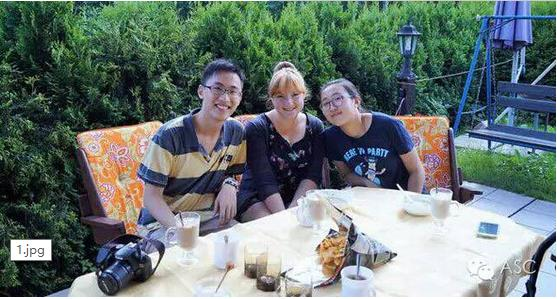
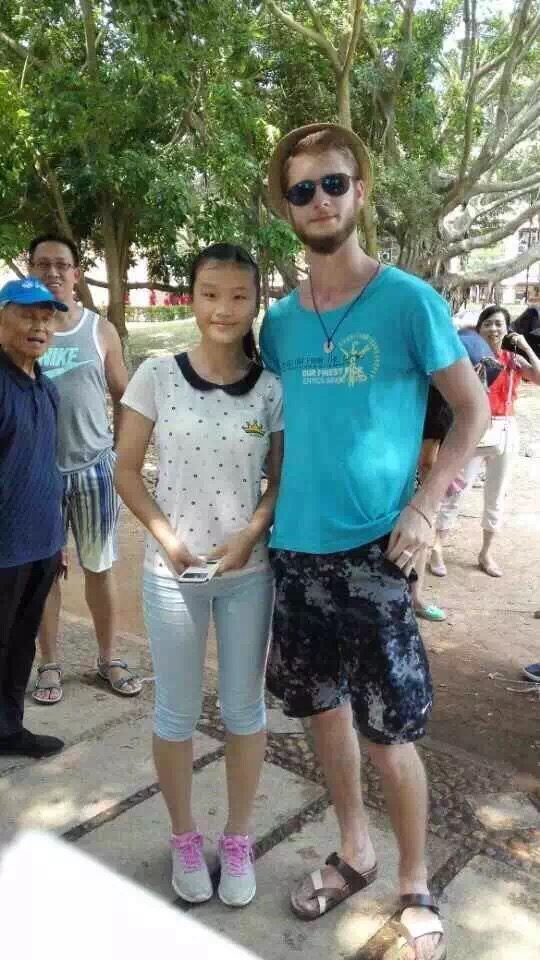
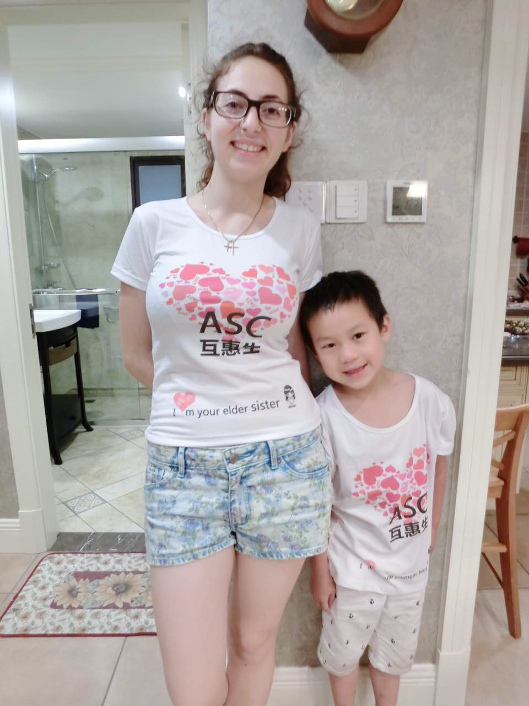

互惠动态
|
|
报了英语暑假班，需请互惠生吗？听听这些妈咪怎么说的！
她们曾报了暑假班，
她她们也曾纠结是否请互惠生，
但最终都请了互惠生!
互惠家庭故事1：儿子终于主动与国外小朋友交流了
为让孩子赢在起跑线上，自儿子上小学开始，我就给他报周末、暑期、寒假等各种英语培训班。几年下来了，儿子积累了不少词汇，但遇见国外小朋友总不敢主动交流，这让我很是头疼。后来，我在网上了解到了ASC互惠生，感觉互惠互利模式不错，于是决定参加暑假班培训的同时，请了一位互惠生。

自从互惠生进入我们的家庭生活后，我儿子的外语口语方面有很明显的进步，如今已经能够大方自信的与国外小朋友交流了！
互惠家庭故事2：暑假班+ASC互惠生，宝贝英语提升速度很快
我家闺女英语一直不是很好，为了提高她的英语水平，我给她报了个暑期班。有天，我看到邻居家的儿子跟一个外国人在一起，跟邻居了解后得知，原是ASC互惠生。邻居还告诉我，自从互惠生来他家后，原来不爱学英语的儿子越来越喜欢英语。

那双管齐下，闺女的英语岂不是提升的更快？于是我也申请了互惠生。果不其然，2个月后，闺女的英语快速提升。开学后，英语老师对她的进步也是惊讶不已。个人觉得，ASC互惠生真心不错，值得选择！
互惠家庭故事3：请ASC互惠生，放心、安心！
英语是国际第一语言，为了让儿子学好英语，去年我特地给他报了暑假班。可是，由于我跟孩子他爸工作都比较忙，经常没时间接送他。正当我考虑找个保姆的时候，好友向我推荐了ASC互惠生，既能做好保姆的工作，还能提高儿子的英语水平，何乐而不为，于是我听从了好友的建议。

如今，ASC互惠生已经来我们家快一年了，每日接送工作她都准时做好，且把与我儿子相处当做一种快乐，很有责任心及耐心！儿子也很是喜欢跟她交流、玩！如今，儿子英语听力及口语有了很大提升。儿子交给互惠生，让我放心、安心！
......
这些真实的ASC互惠家庭故事，还有很多。在此，我就不一一例举了。
你知道吗？
这些都是妈咪们选择ASC互惠生的理由！
他们可以是
一个住家外教，
一个陪孩子练习英文的老外，
一个接送孩子上下学，
一同玩耍的大朋友，
一个承担家务的好帮手，
一个感受异国文化的机会，
一个与全家人互动的外国朋友！
他们大部分来自
美国、英国、加拿大、澳大利亚等！
18-29岁，
高中毕业（本科在读），
或大学本科学历，
具备良好的英语听说能力，
有儿童看护经验！
他们
有责任，有义务，有爱心，
但也有自己的权利，
更有年轻人对中国生活的好奇和向往！
他们在生活和学习上都能帮助您的孩子，培养您孩子的创造力和开放性思维，让您的孩子变得独立并有责任感。亲，你还纠结啥呢？赶紧申请ASC互惠生吧！
关于ASC
暑假来，开心来，你的暑假有计划了吗？你还在为外语作业而发愁吗？你想请个欧美的哥哥姐姐陪你 do homework 吗？那么，加入我们ASC吧！我们把国外的互惠生请来家庭里，照顾自家的孩子，从小培养外文的语言环境，为孩子出国，全家移民打下优良的基础。你还在等什么？机会难得，名额有限，我们的服务更是面向全国家庭哦！
上海中心：
Tel: 86-21-61116069
南京中心：
Tel: 86-25-66065662
手机：15601666586
（可加微信）
Q Q：3259637585
微信：asc-center
邮箱：info@asc-center.com
网站：www.asc-aupair.com